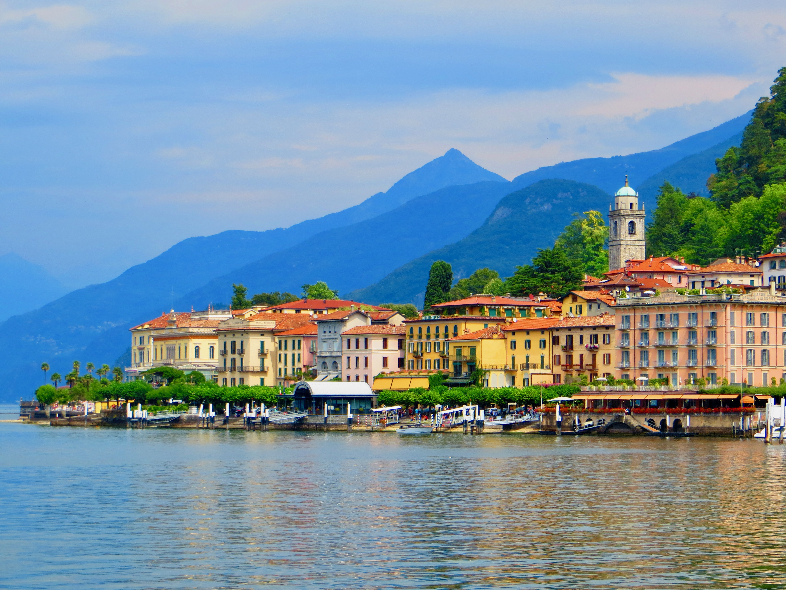

Lake Como, Italia
Lake Como on kaunis järvi Pohjois-Italiassa alppien juurella. Alue tunnetaan upeista maisemistaan ja viehättävistä pienistä kylistä.
Matkailija voi tutustua järven ympärillä sijaitseviin kyliin, tehdä veneretkiä ja nauttia italialaisesta ruoasta.